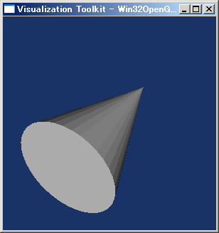
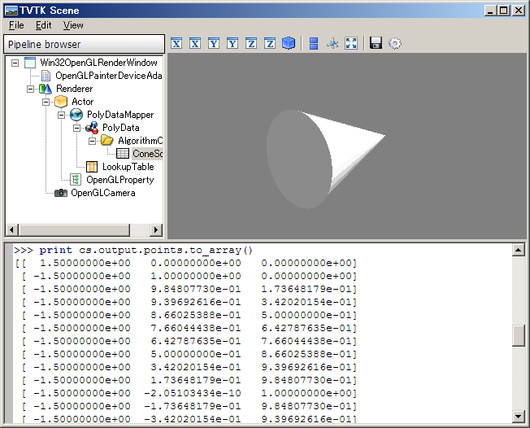
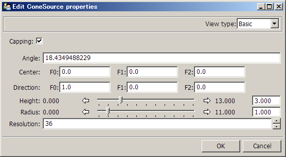
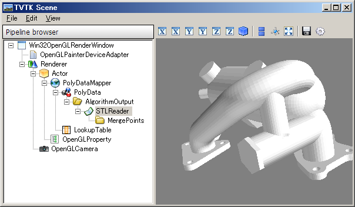
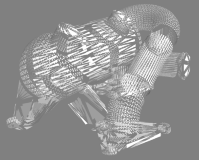
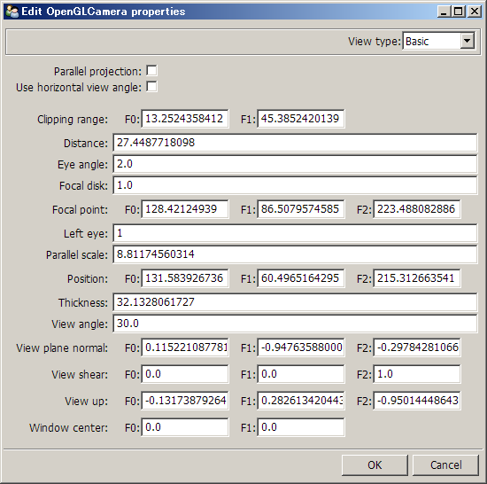
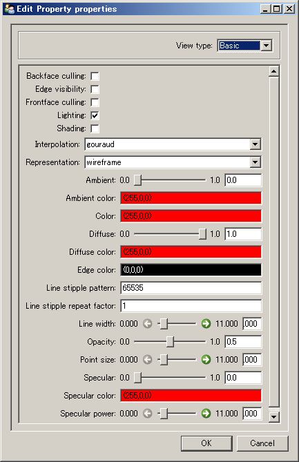

TVTK-三维可视化数据
VTK (http://www.vtk.org/) 是一套三维的数据可视化工具，它由C++编写，包涵了近千个类帮助我们处理和显示数据。它在Python下有标准的绑定，不过其API和C++相同，不能体现出Python作为动态语言的优势。因此enthought.com开发了一套TVTK库对标准的VTK库进行包装，提供了Python风格的API、支持Trait属性和numpy的多维数组。本文将以TVTK为标准对VTK的一些功能进行介绍，如果读者已经对VTK很了解，想知道TVTK和VTK的区别的话，可以直接跳到第二节。
TVTK使用简介
a
显示圆锥
作为第一例子，让我们来看一个显示圆锥的小程序:
# -*- coding: utf-8 -*-
from enthought.tvtk.api import tvtk
# 创建一个圆锥数据源，并且同时设置其高度，底面半径和底面圆的分辨率(用36边形近似)
cs = tvtk.ConeSource(height=3.0, radius=1.0, resolution=36)
# 使用PolyDataMapper将数据转换为图形数据
m = tvtk.PolyDataMapper(input = cs.output)
# 创建一个Actor
a = tvtk.Actor(mapper=m)
# 创建一个Renderer，将Actor添加进去
ren = tvtk.Renderer(background=(0.1, 0.2, 0.4))
ren.add_actor(a)
# 创建一个RenderWindow(窗口)，将Renderer添加进去
rw = tvtk.RenderWindow(size=(300,300))
rw.add_renderer(ren)
# 创建一个RenderWindowInteractor（窗口的交互工具)
rwi = tvtk.RenderWindowInteractor(render_window=rw)
# 开启交互
rwi.initialize()
rwi.start()
此程序的运行画面如下：

使用TVTK绘制简单的圆锥
首先从tvtk.api中载入tvtk，tvtk像是一个工厂，能够帮助我们创建vtk中的各种对象:
>>> from enthought.tvtk.api import tvtk
下面创建了一个ConeSource（圆锥数据源）对象，并用变量cs保存它。原始的VTK对象的属性，在tvtk中都以trait属性的形式进行包装，因此我们可以在创建对象的同时，传递关键字参数直接配置各个trait属性的值，在这个例子中，同时设置了圆锥的高度，底面半径和底面圆的分辨率(用36边形近似)等属性，最后调用print_traits显示所创建的圆锥数据的所有trait属性，为了节省篇幅，这里只挑选了其中的几个属性:
>>> cs = tvtk.ConeSource(height=3.0, radius=1.0, resolution=36)
>>> cs.print_traits()
...
angle: 18.43494882292201
...
center: array([ 0., 0., 0.])
class_name: 'vtkConeSource'
...
direction: array([ 1., 0., 0.])
...
height: 3.0
...
radius: 1.0
...
resolution: 36
...
在VTK中将原始数据转换为我们看到的屏幕上的一幅图像，要经过许多步骤的处理，这些步骤由众多的VTK的对象共同协调完成，就好象生产线上加工零件一样，每位工人都负责一部分的工作，整条生产线就能将原材料制作成产品。因此在VTK中，这种对象之间协调完成工作的过程被称作流水线(Pipeline)。
原始数据被转换为图像要经过两条流水线：
- 可视化流水线(Visualization Pipeline)：它的工作是将原始数据加工成图形数据。通常我们需要可视化的数据本身并不是图形数据，例如某个零件内部各个部分的温度，或者是流体在各个坐标点上的速度等等。
- 图形流水线(Graphics Pipeline)：它的工作是将将图形数据加工为我们所看到的图像。可视化流水线所产生的图形数据通常是三维空间的数据，如何在二维的屏幕上显示出来就需要图形流水线的加工了。
映射器(Mapper)则是可视化流水线的终点，图形流水线的起点，它将各种派生类能将众多的数据映射为图形数据以供图形流水线加工。
让我们对照一下前面的的圆锥的例子：ConeSource的对象通过程序内部计算输出一组描述圆锥的数据(PolyData)：然后，PolyData通过PolyDataMapper映射器将数据映射为图形数据。在这个例子中，可视化流水线由ConSource和PolyDataMapper组成。
图形数据依次通过Actor、Renderer最终在RenderWindow中显示出来，这一部分就是图形流水线。
- Actor : 表示润色场景中的一个实体。它包括一个图形数据(mapper)，并且具有描述实体的位置、方向、大小的属性。
- Renderer : 表示润色的场景。它包括多个需要润色的Actor。在圆锥的例子中，它只包括一个表示圆锥的Actor。
- RenderWindow : 表示润色用的图形窗口，它包括一个或者多个Render。在圆锥的例子中，它只包括一个Renderer。
- RenderWindowInteractor : 给图形窗口提供一些用户交互功能，例如平移、旋转、放大缩小。这些交互式操作并不改变Actor或者图形数据的属性，只是调整场景中的照相机(Camera)的一些设置而已。
什么是PolyData
PolyData是一个描述一组三维空间中的点、线、面的数据结构。点、线、面通过以下几个属性描述：
- points : 类型为Points，保存三维空间中的点的坐标的数组，这些数据不是用来显示的。
- verts : 类型为CellArray，它描述需要显示的顶点，其值为 points 某个坐标点的下标，即通过 verts 属性描述 points 中的哪些点是最终需要显示的。
- line : 类型为CellArray，它描述需要显示的边线，其值为边线的两个端点在 points 中的下标。
- polys : 类型为CellArray，它描述需要显示的面，其值为构成面的各个点在 points 中的下标。
用ivtk观察流水线
为了方便我们操作和观察流水线，交互式地修改各个tvtk对象的属性，TVTK库为我们提供了一个叫做ivtk的对象。下面是使用ivtk显示圆锥的程序：
# -*- coding: utf-8 -*-
from enthought.tvtk.api import tvtk
# 载入ivtk所需要的对象
from enthought.tvtk.tools import ivtk
from enthought.pyface.api import GUI
cs = tvtk.ConeSource(height=3.0, radius=1.0, resolution=36)
m = tvtk.PolyDataMapper(input = cs.output)
a = tvtk.Actor(mapper=m)
# 创建一个GUI对象，和一个带Crust(Python shell)的ivtk窗口
gui = GUI()
window = ivtk.IVTKWithCrustAndBrowser(size=(800,600))
window.open()
window.scene.add_actor( a ) # 将圆锥的actor添加进窗口的场景中
gui.start_event_loop()
#window.scene.reset_zoom()
此程序的运行画面如下：

带流水线浏览器和Python Shell的界面
除了显示圆锥的场景之外，ivtk创建的窗口还为我们提供了如下几个元素：
- 场景工具条 : 位于润色场景的上方。主要提供了各种视角、全屏显示、保存图像等几个功能。
- 流水线浏览器 : 场景的左边是一个用树状结构表示的流水线。从叶子节点(ConeSource)开始逐步向上层直到根节点RenderWindow，是完整的显示圆锥的流水线。
- Python Shell : 下方提供了一个Python Shell，便于我们直接输入命令操作各个对象。例如图中我们打印出ConeSource的输出PolyData的points属性的值。即构成圆锥图形的各个点的三维坐标。
流水线浏览器中显示的各个对象的类型都继承于HasTraits类，因此它们都可以提供一个用户界面交互式地修改它们的trait属性。下图是双击ConeSource之后出现的修改ConeSource属性的界面。
Note
在我的电脑上，双击ConeSource之后出现一个很小的窗口，需要手工调整大小。

编辑ConeSource对象的属性的对话框
我们看到可以通过此界面直接修改height、Radius、resolution等属性，并且修改之后场景中的圆锥按照最新的属性值立即更新显示。
从文件读取数据
大多数情况下我们不会只用VTK显示圆锥这样的简单物体，VTK的建模功能并不强大，因此它支持许多种格式的文件，能将其它软件产生的数据通过各种Reader类读入VTK，放到流水线上处理。下面的例子从文件42400-IDGH.stl中载入模型数据，并且润色显示。
# -*- coding: utf-8 -*-
from enthought.tvtk.api import tvtk
from enthought.tvtk.tools import ivtk
from enthought.pyface.api import GUI
part =tvtk.STLReader(file_name = "42400-IDGH.stl")
part_mapper = tvtk.PolyDataMapper( input = part.output )
part_actor = tvtk.Actor( mapper = part_mapper )
gui = GUI()
window = ivtk.IVTKWithBrowser(size=(800,600))
window.open()
window.scene.add_actor( part_actor )
gui.start_event_loop()
此程序的运行画面如下：

显示文件中的3D模型
对比显示圆锥的程序，除了PolyDataMapper的输入从ConeSource改为STLReader之外，其他的部分没有任何区别。STLReader对象知道如何读取STL文件中的数据，并且转换为PolyData，以供PolyDataMapper使用。另外请注意我们这次用ivtk.IVTKWithBrowser产生一个不带Python Shell的ivtk窗口。
STL是什么文件
STL的全称为stereo-lithography，由3D Systems公司开发，它使用三角形面片来表示三维实体模型，现已成为CAD/CAM系统接口文件格式的工业标准之一，绝大多数造型系统能支持并生成此种格式文件。例子中的42400-IDGH.stl文件来自于VTK的示例数据。笔者对模具设计没有研究，只是照葫芦画瓢，把VTK的例子转换为TVTK而已。
过滤数据
前面的例子中包括一个数据源和mapper对象，但是流水线中没有过滤器对数据进行过滤，下面我们看看如何对数据进行过滤以减少多边形面的数量。对上节的程序进行修改，在STLReader和PolyDataMapper之间插入一个ShrinkPolyData对象：
part =tvtk.STLReader(file_name = "42400-IDGH.stl")
shrink = tvtk.ShrinkPolyData(input = part.output, shrink_factor = 0.5 )
part_mapper = tvtk.PolyDataMapper( input = shrink.output )
ShrinkPolyData过滤器的输入和输出都是PolyData，它可以减少输入PolyData对象中单元(点线面)的数目，但是会造成不单元之间不连续。

使用ShrinkPolyData过滤器过滤后的模型
控制照相机
如果你使用ivtk显示3D数据的话，在左边的流水线浏览器中可以找到OpenGLCamera，双击它弹出如下窗口：

编辑照相机属性的对话框
这个窗口显示的是3D场景的照相机的所有配置。如果你需要用程序控制照相机的话，可以用：
>>> camera = window.scene.renderer.active_camera
获得场景中的当前照相机对象，然后就可以获得或者修改照相机的各项配置：
>>> camera.clipping_rage
array([ 20.46912341, 51.21854284])
>>> camera.view_up = 0,1,0
下面介绍一些照相机的一些常用属性：
- clipping_plane : 它有两个元素，分别表示照相机到近、远两个裁剪平面的距离。在这两个平面之外的对象将不会被显示出来。
- position : 照相机在三维空间中的坐标
- focal_point : 照相机所聚焦的焦点坐标
- view_up : 照相机的上方向矢量
- parallel_projection : 如果为True的话表示采用平行透视，即在3D场景中平行的线投影到2D平面上将仍然是平行的
这些属性虽然可以完全控制照相机的位置和方向，但是实际操作起来并不方便。当将照相机的焦点已经固定好在某个位置上的话，可以通过调用： ..TODO *azimuth : 以焦点为圆心，沿着纬度线旋转指定角度，即水平旋转，改变其经度
- elevation : 沿着经度线方向旋转指定角度，即垂直旋转，改变其纬度
在以焦点为原点的球体坐标系中对照相机进行操作。这两个函数保持view_up属性不变。
控制照明
照明比照相机容易配置得多，假设你运行了ivtk的圆锥的例子的话，直接在窗口下方的命令行中输入：
>>> camera = window.scene.renderer.active_camera
>>> light = tvtk.Light(color=(1,0,0))
>>> light.position=camera.position
>>> light.focal_point=camera.focal_point
>>> window.scene.renderer.add_light(light)
..TODO 即可在照相机所在处添加一个红色的光源，它的照射方向为朝向focal_point点。如果你设置light的positional属性为True的话，那么它就变成一个探照灯光源，这时照射方向有效。并且可以通过cone_angle属性设置探照灯的光锥角度。光锥为180度的话，就是无方向光源。
控制3D Props
在3D场景中显示的物体通常被称作prop，有几种prop类型，其中包括：Prop3D和Actor。3D场景中所有prop的都从Prop3D继承。
TVTK的改进
下面是使用Python的标准VTK库显示一个圆锥的例子:
import vtk
# Source object .
cone = vtk.vtkConeSource( )
cone.SetHeight( 3.0 )
cone.SetRadius( 1.0 )
cone.SetResolution(10)
# The mapper .
coneMapper = vtk.vtkPolyDataMapper( )
coneMapper.SetInput( cone.GetOutput( ) )
# The actor.
coneActor = vtk.vtkActor( )
coneActor.SetMapper ( coneMapper )
# Set it to render in wireframe
coneActor.GetProperty( ).SetRepresentationToWireframe( )
# Renderer and render window .
ren1 = vtk.vtkRenderer( )
ren1.AddActor( coneActor )
ren1.SetBackground( 0.1 , 0.2 , 0.4 )
renWin = vtk.vtkRenderWindow( )
renWin.AddRenderer( ren1 )
renWin.SetSize(300 , 300)
# On screen interaction .
iren = vtk.vtkRenderWindowInteractor( )
iren.SetRenderWindow( renWin )
iren.Initialize( )
iren.Start( )
我们可以出这个例子和C++的程序的区别仅仅是没有声明变量的类型，其它的用法完全是按照C++的VTK API调用的。官方所提供的VTK-Python包和C++语言的接口相似，许多地方没有能够体现出Python作为动态语言的优势，可以说标准的VTK-Python库不够Python风格。为了弥补标准库的这些不足之处，Enthought.com开发了TVTK库进一步对VTK进行包装，它具有如下的一些优点:
- 支持Trait属性
- 支持元素的Pickle操作
- API更接近Python风格
- 能自动处理numpy的数组或者Python的列表
- 高级的脚本式的mlab API，和流水线浏览器ivtk
- tvtk的场景和流水线浏览器支持Envisage插件
TVTK的基本用法
下面是用TVTK实现上面的显示圆锥的例子:
from enthought.tvtk.api import tvtk
cone = tvtk.ConeSource( height=3.0, radius=1.0, resolution=10 )
cone_mapper = tvtk.PolyDataMapper( input = cone.output )
cone_actor = tvtk.Actor( mapper=cone_mapper )
cone_actor.property.representation = "w"
ren1 = tvtk.Renderer()
ren1.add_actor( cone_actor )
ren1.background = 0.1, 0.2, 0.4
ren_win = tvtk.RenderWindow()
ren_win.add_renderer( ren1 )
ren_win.size = 300, 300
iren = tvtk.RenderWindowInteractor( render_window = ren_win )
iren.initialize()
iren.start()
可以看到这个程序比标准VTK版本要简短得多，从中我们可以看到TVTK的一些重要的更改：
- tvtk用 from enthought.tvtk.api import tvtk 语句载入
- tvtk的类名为VTK的类名除去前缀"vtk"。有些类名在"vtk"之后是数字：vtk3DSImporter，由于Python的标示符首字符不能为数字，因此tvtk对此进行特殊处理:如果首字符为数字，则用其英文单词代替: ThreeDSImporter。
- tvtk对象的方法名按照Enthought的一贯用法，采用下划线连接单词：例如如果VTK中的AddItem，将对应tvtk中的add_item。
- 许多VTK的方法在tvtk中用trait属性替代，例如前面的例子中我们用m.input = cs.output表示VTK中的m.SetInput(cs.GetOutput())，p.representation = 'w'表示VTK中的p.SetRepresentationToWireframe()。由于在VTK中许多需要用Set, Get的属性在TVTK中都是以Trait属性表现的，Trait属性的初始化可以在产生对象的同时进行配置。
- trait属性可以在创建类的对象的同时通过关键字参数进行设置
在内部实现中，所有的tvtk对象都内部包装有一个VTK对象，对tvtk对象的方法的调用将转给相应的VTK对象的方法执行，如果返回值是VTK对象的话，将被包装成tvtk对象返回。如果方法的参数是tvtk对象的话，其中的VTK对象将传递给VTK的方法。
通过调用tvtk.to_tvtk(p)，可以得到p中所包装的VTK对象
Trait属性
所有的tvtk类都继承于traits.HasStrictTraits，HasStrictTraits规定了它的子类的对象在创建之后不能对不存在的属性进行赋值。
VTK中所有和基本状态有关的的方法在tvtk中都以trait属性表示。trait属性为我们带来如下的便利:
通过调用set方法可以一次设置多个trait属性：
>>> p = tvtk.Property() >>> p.set(opacity=0.5, color=(1,0,0), representation="w")通过调用edit_traits或者configure_traits方法直接出界面编辑属性。对trait属性的更改将自动作用到内部的VTK对象之上，反过来，内部的VTK对象的状态改变也将自动更新trait属性。下面是一个例子：
>>> p.edit_traits()
每个TVTK对象都可以有自己的编辑属性的对话框界面
我们可以通过tvtk.to_tvtk(p)函数得到任何tvtk对象所包装的TVK对象：
>>> print p.representation wireframe >>> p_vtk = tvtk.to_vtk(p) >>> p_vtk.SetRepresentationToSurface() >>> print p.representation surface
序列化(Pickling)
tvtk对象支持简单的序列化处理。单个tvtk对象的状态可以被序列化：
>>> import cPickle
>>> p = tvtk.Property()
>>> p.representation="w"
>>> s = cPickle.dumps(p)
>>> del p
>>> q = cPickle.loads(s)
>>> q.representation
'wireframe'
但是序列化仅仅能保存对象的状态，对象之间的引用无法被保存。因此VTK的整个流水线无法用序列化保存。
通常pickle.load将创建新的对象，如果我们希望更新某个已经存在的对象的状态的话，可以如下调用:
>>> p = tvtk.Property()
>>> p.interpolation = "flat"
>>> d = p.__getstate__()
>>> del p
>>> q = tvtk.Property()
>>> q.interpolation
'gouraud'
>>> q.__setstate__(d)
>>> q.interpolation
'flat'
集合迭代
从tvtk.Collection继承的对象可以像标准的Python序列对象一样使用:
>>> ac = tvtk.ActorCollection()
>>> len(ac)
0
>>> ac.append(tvtk.Actor())
>>> ac.append(tvtk.Actor())
>>> len(ac)
2
>>> for a in ac:
... print a
...
vtkOpenGLActor (06A99EB8)
......
vtkOpenGLActor (069C4270)
......
>>> del ac[0]
>>> len(ac)
1
我们看到ActorCollection可以像Python的列表对象一样支持len, append和for循环。对比一下VTK的相应的版本，就能体会出tvtk的好处了:
>>> ac = vtk.vtkActorCollection()
>>> ac.GetNumberOfItems()
0
>>> ac.AddItem(vtk.vtkActor())
>>> ac.AddItem(vtk.vtkActor())
>>> ac.GetNumberOfItems()
2
>>> ac.InitTraversal()
>>> for i in range(ac.GetNumberOfItems()):
... print ac.GetNextItem()
...
vtkOpenGLActor (05E0A750)
......
vtkOpenGLActor (05E0A8C0)
......
>>> ac.RemoveItem(0)
>>> ac.GetNumberOfItems()
1
数组操作
所有继承于DataArray类的对象和Python的序列一样，支持迭代接口，以及 __getitem__, __setitem__, __repr__, append, extend等等。此外，它还可以直接用numpy的数组或者python的列表直接进行赋值(使用from_array方法)，或者将DataArray中保存的数据转换为numpy的数组。Points和IdList等类也同样支持这些特性：
>>> pts = tvtk.Points()
>>> p_array = np.eye(3)
>>> p_array
array([[ 1., 0., 0.],
[ 0., 1., 0.],
[ 0., 0., 1.]])
>>> pts.from_array(p_array)
>>> pts.print_traits()
_in_set: 0
_vtk_obj: <vtkCommonPython.vtkPoints vtkobject at 069A0FB0>
actual_memory_size: 1L
bounds: (0.0, 1.0, 0.0, 1.0, 0.0, 1.0)
class_name: 'vtkPoints'
data: [(1.0, 0.0, 0.0), (0.0, 1.0, 0.0), (0.0, 0.0, 1.0)]
data_type: 'double'
...
number_of_points: 3
reference_count: 1
>>> pts.to_array()
array([[ 1., 0., 0.],
[ 0., 1., 0.],
[ 0., 0., 1.]])
此外tvtk的方法或者属性如果接受DataArray, Points, IdList或者CellArray的对象的话，那么它也同时支持数组和列表:
>>> points = np.array([[0,0,0],[1,0,0],[0,1,0],[0,0,1]], 'f')
>>> triangles = np.array([[0,1,3],[0,3,2],[1,2,3],[0,2,1]])
>>> values = np.array([1.1, 1.2, 2.1, 2.2])
>>> mesh = tvtk.PolyData(points=points, polys=triangles)
>>> mesh.point_data.scalars = values
>>> mesh.points
[(0.0, 0.0, 0.0), (1.0, 0.0, 0.0), (0.0, 1.0, 0.0), (0.0, 0.0, 1.0)]
>>> mesh.polys
<tvtk_classes.cell_array.CellArray object at 0x142D4F60>
>>> mesh.polys.to_array()
array([3, 0, 1, 3, 3, 0, 3, 2, 3, 1, 2, 3, 3, 0, 2, 1])
>>> mesh.point_data.scalars
[1.1000000000000001, 1.2, 2.1000000000000001, 2.2000000000000002]
注意CellArray类(mesh的polys属性)的处理有所不同，我们给它传入的是一个二维数组，在内存中保存的却是一维的: array([3, 0, 1, 3, 3, 0, 3, 2, 3, 1, 2, 3, 3, 0, 2, 1])。它的格式是[Cell的数据个数, Cell数据..., Cell的数据个数, Cell数据...]，如下图所示。
CellArray用来描述多边形(Cell)和顶点之间的关系，由于每个Cell可以由不同数量的定点组成，因此内部采用上面所述的形式保存。
TVTK是什么
我们通过from enthought.tvtk.api import tvtk载入tvtk，然后像使用一个模块一样使用它。事实上，我们载入的tvtk并不是一个模块，而是某个类的一个实例。之所以会如此设计，是因为VTK库有近千个类，而TVTK对所有这些类都进行了包装，如果一次性载入这么多类，会极大地影响库的载入速度。
我们载入的tvtk虽然是某个类的实例，但是用起来就和模块一样：
- 通过tvtk对象可以使用所有的TVTK类
- 它不需要载入近千个TVTK类就能支持类名的自动完成
- 只有在真正使用某个TVTK类时，它才会被载入
所有tvtk相关的代码全部都保存在tvtk_classes.zip文件中。而tvtk对象的类在此压缩文件里的tvtk_helper.py中定义。对于TVTK中的每个类，tvtk对象都有一个同名的属性和类相对应。